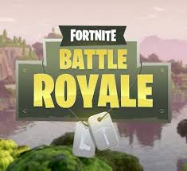
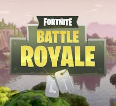

Counter-Strike: Global Offensive
многопользовательская компьютерная игра, разработанная компаниями Valve и Hidden Path Entertainment. Последняя основная игра в серии игр Counter-Strike; как и все игры серии, она посвящена противостоянию террористов и подразделений специального назначения.
Выход на ПК под управлением Windows, на компьютерах Mac и игровых приставках Xbox 360 и PlayStation 3, состоялся 21 августа 2012 года. В 2014 году была выпущена на Linux[2], а в 2016 году — стала доступна, в рамках программы обратной совместимости, на Xbox One.[4] В 2018 году была выпущена бесплатная версия (Counter-Strike: Global Offensive Free Edition) без возможности играть с реальными игроками, представлены только поединки с ботами.
Counter-Strike: Global Offensive во многом схожа с Counter-Strike: Source с поправкой на улучшенную графику и изменения в балансе игры.
Экономическая составляющая играет важную роль в геймплее. Игроки получают соответствующие денежные вознаграждения за выигрыш или проигрыш раунда и убийство игроков вражеской команды. На полученные деньги можно закупать оружие и экипировку. Система штрафов предполагает штраф (снятие средств с виртуального счёта игрока) за убийство товарища по команде (300$), а также штраф за нанесение урона заложнику (от 30$ до 1500$)
 
